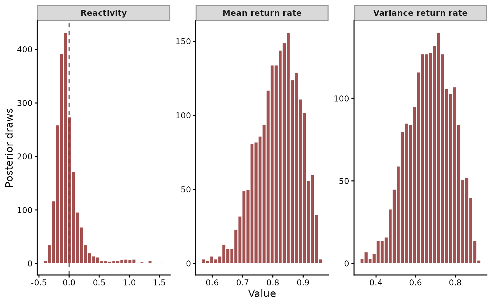

Compute reactivity, return rates and contributions of interactions to stationary forecast variance from mvgam models with Vector Autoregressive dynamics.
Usage
stability(object, ...)
# S3 method for class 'mvgam'
stability(
object,
groups = NULL,
ndraws = NULL,
draw_ids = NULL,
summary = TRUE,
probs = c(0.025, 0.975),
future = FALSE,
...
)Arguments
- object
An object of class
mvgamfitted with aVAR(p = 1)latent process model- ...
Unused. Anything passed here is refused.
- groups
Hierarchical VAR fits only. The panels to summarise, by name or by index into the levels of
gr. The defaultNULLsummarises every panel. A non-hierarchical fit acceptsNULLalone.- ndraws
Positive integer specifying number of posterior draws to use. NULL (default) uses all available draws.
- draw_ids
Optional integer vector selecting a subset of posterior draw indices to use. NULL (default) uses all draws (subject to
ndraws).- summary
Logical.
TRUE(the default) returns the posterior median and interval of each metric.FALSEreturns the metrics of each draw.plot()draws histograms of either form.- probs
The lower and upper percentiles of the interval reported with the median when
summary = TRUE.- future
Logical. WhenTRUE, the per-draw computation runs under thefuture::plan()the caller has set. The defaultsequentialplan runs as baselapply()does.plan(multisession, workers = N)splits the draws acrossNR processes. Without the future package the draws run in turn, with a message.
Value
A data.frame with the posterior median and interval of
each stability metric, or under summary = FALSE an object of class
mvgam_stability holding one row of metrics per posterior draw.
Details
These measures describe how much the lagged interactions among the series contribute to the variability of the system. They also describe how the system responds to a perturbation (Ives et al. 2003). For a latent VAR(1)
$$ x_t \sim \text{MVNormal}(A x_{t - 1}, \Sigma) $$
the stationary covariance \(\Sigma_{\infty}\) solves \(\Sigma_{\infty} = A \Sigma_{\infty} A^\top + \Sigma\). Each posterior draw of \(A\) and \(\Sigma\) gives one draw of every metric:
prop_int: the proportion of the volume of the stationary distribution that the lagged interactions generate, \(\det(A)^2\).\item `prop_int_adj`: `prop_int` scaled by the number of series \eqn{p}, \eqn{|\det(A)|^{2/p}}. It compares across systems of different size. \item `prop_int_offdiag`, `prop_int_diag`: the sensitivity of `prop_int` to each cell of \eqn{A} is \eqn{2 \det(A) (A^{-1})^\top}. `prop_int_offdiag` is the mean absolute sensitivity of the off-diagonal cells (interactions between series) as a share of that mean plus the mean absolute sensitivity of the diagonal cells (self-regulation). `prop_int_diag` is the remaining share. \item `prop_cov_offdiag`, `prop_cov_diag`: the same split for the sensitivity of \eqn{\det(\Sigma_{\infty})} to each cell of \eqn{\Sigma_{\infty}}, \eqn{\det(\Sigma_{\infty}) (\Sigma_{\infty}^{-1})^\top}. Off-diagonal cells are counted where \eqn{\Sigma} is estimated. \item `reactivity`: the log of the largest singular value of \eqn{A}, \eqn{\log \sigma_{max}(A)} (Neubert et al. 2009). A positive value means some perturbation grows in the step after it occurs, before the system returns to equilibrium. \item `mean_return_rate`: the largest modulus of the eigenvalues of \eqn{A}. The distance of the mean from its stationary value shrinks by this factor each step, asymptotically. A value nearer 1 means a slower return. \item `var_return_rate`: the same factor for the variance, the largest modulus of the eigenvalues of \eqn{A \otimes A}, which is `mean_return_rate` squared.
The prior on \(A\) keeps every draw stationary (Heaps 2023). \(\Sigma_{\infty}\) and every metric then exist in every draw.
irf() and fevd() describe the same dynamics as responses to
shocks.
References
AR Ives, B Dennis, KL Cottingham & SR Carpenter (2003). Estimating community stability and ecological interactions from time-series data. Ecological Monographs, 73, 301-330.
MG Neubert, H Caswell & AR Solow (2009). Detecting reactivity. Ecology, 90, 2683-2688.
SE Heaps (2023). Enforcing stationarity through the prior in vector autoregressions. Journal of Computational and Graphical Statistics, 32, 74-83.
See also
irf() and fevd() summarise the same VAR dynamics.
The VAR article runs stability() on
a plankton community. The
hierarchical VAR article
reports the metrics for each group of a hierarchical VAR.
Other latent dynamics:
active_factors(),
compare_loadings(),
fevd.mvgam(),
irf.mvgam(),
ordinate(),
posterior_transition_matrix(),
residual_cor(),
shared_variation()
Examples
# \dontrun{
set.seed(0)
simdat <- sim_mvgam(family = gaussian(), n_series = 3L,
n_timepoints = 120L, trend_model = VAR(),
prop_trend = 0.95)
var_mod <- mvgam(y ~ 1, trend_formula = ~ VAR(p = 1),
data = simdat$data_train, family = gaussian(),
chains = 2, silent = 2)
#> Warning: 44 of 2000 (2.0%) transitions ended with a divergence.
#> See https://mc-stan.org/misc/warnings for details.
#> Warning: 1 of 2 chains had an E-BFMI less than 0.3.
#> See https://mc-stan.org/misc/warnings for details.
# Posterior medians and intervals of the stability metrics
stab <- stability(var_mod)
stab[stab$metric %in% c("reactivity", "mean_return_rate"), ]
#> metric Estimate Est.Error Q2.5 Q97.5
#> 7 reactivity -0.06752746 0.1284961 -0.2841517 0.7699353
#> 8 mean_return_rate 0.82382811 0.0735674 0.6710897 0.9331748
# The full posterior of each metric
plot(stability(var_mod, summary = FALSE))

# Next: irf() traces a shock through the system over time
# }